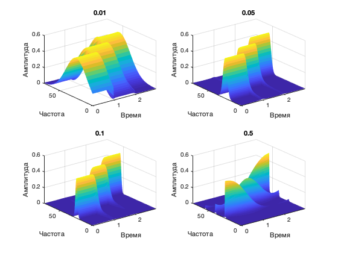

clear;
close all;
Fs = 150;
T = 3;
ts= 0 : 1/Fs : T - 1/Fs;
f1 = 25;
f2 = 40;
f3 = 55;
x = sin(2*pi*f1*ts) +...
sin(2*pi*f2*ts) +...
sin(2*pi*f3*ts);
subplot(2,2,1);
plot(x); grid on; title('сигналы идут одновременно');
subplot(2,2,2);
stem(abs(fft(x))); grid on; title('БПФ сигналы идут одновременно');
t1= 0 : 1/Fs : 1-1/Fs;
t2= 1 : 1/Fs : 2-1/Fs;
t3= 2 : 1/Fs : 3-1/Fs;
l1 = length(t1);
l2 = length(t2);
l3 = length(t3);
x1(1 : l1) = sin(2*pi*f1*t1);
x1(l1 + 1 : l1 + l2 ) = sin(2*pi*f2*t2);
x1(l1 + l2 + 1 : l1 + l2 + l3) = sin(2*pi*f3*t3);
subplot(2,2,3);
plot(x1); grid on; title('Сигналы идут друг за другом');
subplot(2,2,4);
stem(abs(fft(x1))); grid on; title('БПФ сигналы идут друг за другом');
[WX,freq] = wft(x,Fs,'f0',0.05);
figure;
srf = surf(ts, freq, abs(WX));
set(srf, 'LineStyle', 'none');
xlabel('Время'); ylabel('Частота'); zlabel('Амплитуда');
Estimating window parameters...
Optimal frequency bin width was determined to be 0.429394 Hz (rounded to 4 x 10^-1)
Signal preprocessing (detrending, then filtering) and padding (31 values to the left and 31 to the right)...
Applying predictive padding: to the left - 100%; to the right - 100%;
Calculating Windowed Fourier Transform (188 frequencies from 0.000 to 74.800): 100%
